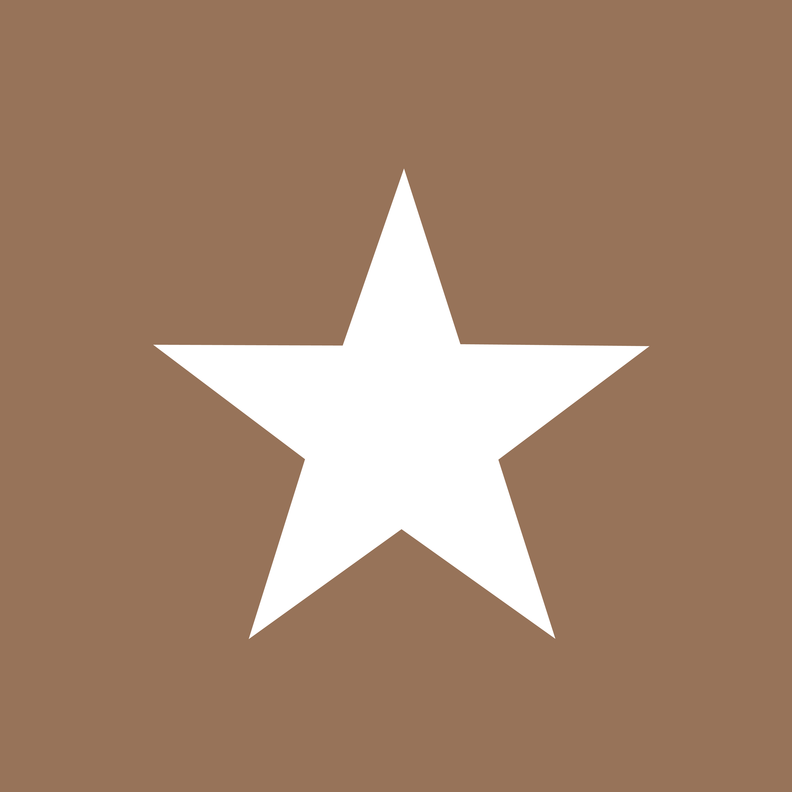

Frissen pörkölt kávé, meleg fények és percek, amikért érdemes megállni. Gyere be, telepedj le, és élvezd a csendet a városi zsongásban.


A Café Harmonic ott kezdődött, ahol a jó kávé és a nyugalom találkozik. Hiszünk abban, hogy egy csésze kávé többet is jelenthet egy pörkölt babnál: egy pillanatnyi megállást a napban, egy beszélgetést, egy új kezdetet.
Gondosan válogatott szemeket használunk, amiket barista csapatunk minden nap frissen főz meg — legyen szó egy gyors reggeli eszpresszóról vagy egy hosszú, délutáni beszélgetésről egy pohár szűrt kávé mellett.
„A harmónia nem csend — hanem az a pillanat, amikor minden a helyén van.”Fedezd fel a kínálatunkat →
„A jó kávé nem siet sehova — mi sem.”
„Minden csésze egy kis kézműves alkotás.”
„A jó süti a legjobb kísérő egy kávéhoz.”
Gondosan kiválasztott, frissen pörkölt szemek — minden csészében ott a törődés.
Meleg fények, puha zenék és egy hely, ahol tényleg megáll az idő egy kicsit.
Naponta frissen sült péksütemények és desszertek, amik illenek a kávéhoz.

„A legjobb flat white a környéken, és a hangulat is minden alkalommal feltölt.”
Kiss Petra„Ide nem csak kávéért járok, hanem a nyugalomért is. Mindig szívesen vagyok itt.”
Tóth Dávid„A sütemények frissek, a kiszolgálás gyors és kedves. Csak ajánlani tudom.”
Varga EszterHétköznap általában nem szükséges, de hétvégén és csúcsidőben ajánljuk az előzetes foglalást, hogy biztosan legyen helyed.
Igen, gyors és ingyenes wifi várja a vendégeinket az egész kávézóban.
Természetesen! Kedvenceket szívesen látunk a teraszon, és bent is, ha nyugodtan viselkednek.
Igen, kisebb rendezvényekhez és céges alkalmakhoz is tudunk cateringet és helyszínt biztosítani — keress minket bátran.
Igen, a kínálatunkban mindig találsz növényi tejes és gluténmentes választásokat is.
| Hétfő – Péntek | 7:30 – 18:00 |
| Szombat | 8:00 – 19:00 |
| Vasárnap | 9:00 – 17:00 |